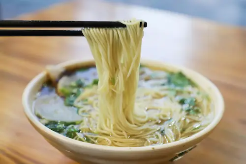
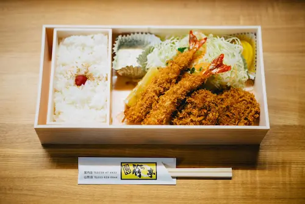
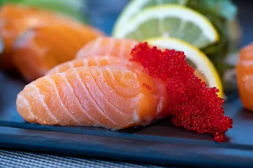
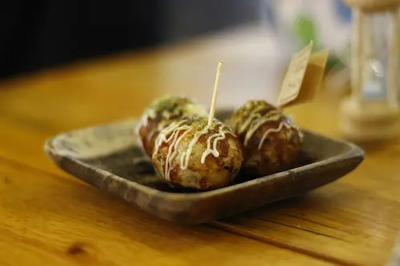
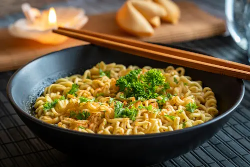
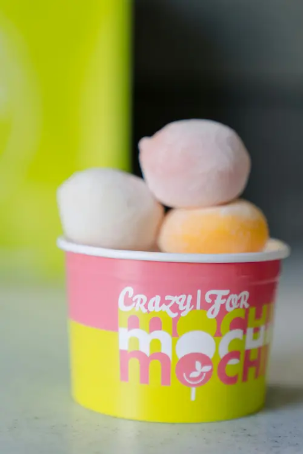
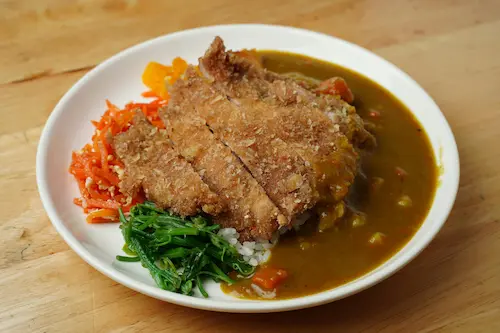
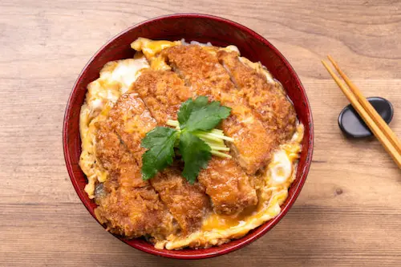

Origen: Periodo Edo (siglo XIX, aunque sus raíces son más antiguas)
El sushi es probablemente el plato japonés más conocido en el mundo. Consiste en arroz avinagrado acompañado de pescado crudo, mariscos, vegetales o huevo, y a veces envuelto en alga nori. Existen muchas variedades, como nigiri, maki, temaki y oshi. El sushi moderno nació en Edo (actual Tokio) como comida rápida para los trabajadores. Hoy es símbolo de elegancia y tradición, y se disfruta tanto en restaurantes de lujo como en puestos callejeros.
Método de preparación: Se cocina arroz especial para sushi y se mezcla con vinagre, azúcar y sal. Se corta el pescado o los ingredientes en láminas y se moldean junto al arroz en diferentes formas. Se sirve acompañado de wasabi, salsa de soja y jengibre encurtido.
Curiosidad: El sushi se come tradicionalmente con las manos y en un solo bocado. El wasabi y la salsa de soja deben usarse con moderación para no ocultar el sabor del pescado.

Ramen (ラーメン)
Origen: Finales del siglo XIX, importado de China y adaptado en Japón
El ramen es una sopa de fideos de trigo servida en un caldo sabroso, que puede ser de miso, salsa de soja, sal o cerdo (tonkotsu). Se acompaña de ingredientes como cerdo asado (chashu), huevo marinado, alga nori, cebollín y brotes de bambú. Cada región de Japón tiene su propio estilo de ramen, como el Sapporo ramen (miso) o el Hakata ramen (tonkotsu).
Método de preparación: Se prepara un caldo base (de pollo, cerdo, miso, etc.) que puede llevar varias horas. Se cuecen los fideos aparte y se sirven en el caldo caliente junto con los ingredientes elegidos, decorando con cebollín y alga nori.
Curiosidad: En Japón es común sorber los fideos ruidosamente, ya que se considera una señal de disfrute y ayuda a enfriar la sopa.

Tempura (天ぷら)
Origen: Siglo XVI, introducido por misioneros portugueses
La tempura consiste en mariscos, pescados o verduras rebozados en una masa ligera y fritos en aceite. El secreto está en la textura crujiente y ligera del rebozado. Se sirve con salsa tentsuyu y rábano rallado.
Método de preparación: Se prepara una masa ligera con harina, huevo y agua muy fría. Los ingredientes se sumergen en la masa y se fríen en aceite caliente hasta que estén dorados y crujientes. Se escurren y se sirven inmediatamente.
Curiosidad: El nombre "tempura" proviene del latín "tempora", refiriéndose a los días de ayuno en los que los misioneros portugueses no comían carne.

Sashimi (刺身)
Origen: Periodo Muromachi (siglo XIV-XVI)
El sashimi es pescado o marisco crudo cortado en finas láminas y servido sin arroz. Se acompaña de salsa de soja, wasabi y jengibre encurtido. La frescura y calidad del pescado son fundamentales. Es un plato que resalta la pureza y el sabor natural de los ingredientes.
Método de preparación: Se selecciona pescado o marisco muy fresco, se limpia y se corta en láminas finas con un cuchillo especial. Se sirve decorado con rábano daikon rallado y acompañado de salsa de soja y wasabi.
Curiosidad: El cuchillo utilizado para cortar sashimi, llamado "yanagiba", es extremadamente afilado y requiere gran destreza.
Okonomiyaki (お好み焼き)
Origen: Siglo XX, popularizado tras la Segunda Guerra Mundial
El okonomiyaki es una especie de "tortilla" o "pizza" japonesa hecha con una masa de harina, huevo, repollo y otros ingredientes al gusto, como carne, mariscos o queso. Se cocina en una plancha y se cubre con salsa okonomiyaki, mayonesa, alga aonori y copos de bonito seco (katsuobushi). Hay variantes regionales, siendo las más famosas las de Osaka y Hiroshima.
Método de preparación: Se mezcla harina, huevo, agua y repollo picado, añadiendo los ingredientes deseados. Se vierte la mezcla en una plancha caliente y se cocina por ambos lados. Se decora con salsa, mayonesa y toppings al gusto.
Curiosidad: En Hiroshima, los ingredientes se colocan en capas y se añade fideos yakisoba, creando una versión única y abundante.

Takoyaki (たこ焼き)
Origen: Osaka, años 30 del siglo XX
El takoyaki son bolitas de masa rellenas de trozos de pulpo, cebolla y jengibre encurtido, cocinadas en una plancha especial. Se sirven cubiertas de salsa takoyaki, mayonesa, alga aonori y copos de bonito seco. Es una comida callejera muy popular en festivales y mercados.
Método de preparación: Se prepara una masa líquida de harina, huevo y caldo. Se vierte en una plancha especial con huecos redondos, se añade el pulpo y otros ingredientes, y se gira con palillos hasta que las bolitas estén doradas y crujientes.
Curiosidad: El takoyaki se come muy caliente y es famoso por quemar la boca de los impacientes.

Udon (うどん)
Origen: Siglo IX, con influencias chinas
El udon son fideos gruesos de trigo que se sirven en un caldo suave, generalmente de salsa de soja y dashi. Se pueden acompañar de tempura, cebollín, tofu frito (aburaage) o huevo. Hay muchas variantes regionales, como el Sanuki udon de Kagawa.
Método de preparación: Se amasa harina de trigo con agua y sal, se estira y se corta en fideos gruesos. Se cuecen en agua hirviendo y se sirven en un caldo caliente con los acompañamientos elegidos.
Curiosidad: En la región de Kagawa, conocida como la "prefectura del udon", existen rutas turísticas dedicadas exclusivamente a probar diferentes tipos de udon.

Mochi (餅)
Origen: Periodo Jomon (prehistoria japonesa), tradicionalizado en el periodo Heian
El mochi es un pastelito de arroz glutinoso machacado hasta obtener una textura elástica. Se consume durante celebraciones como el Año Nuevo y en festivales. Puede estar relleno de pasta de judía roja (anko), helado u otros ingredientes dulces o salados.
Método de preparación: Se cuece arroz glutinoso y se machaca en un mortero especial (usu) hasta formar una masa elástica. Se moldea en pequeñas porciones y se rellena o decora al gusto.
Curiosidad: El mochitsuki, la ceremonia de elaboración del mochi, es todo un espectáculo tradicional donde varias personas golpean el arroz al ritmo de cánticos.

Tonkatsu (豚カツ)
Origen: Finales del siglo XIX, inspirado en la cocina occidental (yōshoku)
El tonkatsu es una chuleta de cerdo empanada y frita, crujiente por fuera y jugosa por dentro. Se sirve cortada en tiras, acompañada de col rallada, arroz, sopa de miso y salsa tonkatsu (una salsa espesa y dulce).
Método de preparación: Se sazona la chuleta de cerdo, se pasa por harina, huevo batido y panko (pan rallado japonés), y se fríe en abundante aceite caliente hasta que esté dorada. Se escurre y se corta en tiras antes de servir.
Curiosidad: El tonkatsu es tan popular que existen restaurantes especializados llamados "tonkatsu-ya" y versiones con pollo (chicken katsu) o gambas (ebi katsu).

Katsudon (カツ丼)
Origen: Principios del siglo XX
El katsudon es un bol de arroz cubierto con una chuleta de cerdo empanada (tonkatsu), huevo y cebolla cocidos en una salsa dulce de soja y mirin. Es un plato reconfortante y muy popular en todo Japón.
Método de preparación: Se prepara un tonkatsu y se corta en tiras. En una sartén se cocina cebolla en salsa de soja, mirin y dashi, se añade el tonkatsu y se vierte huevo batido por encima. Se cocina hasta que el huevo cuaje y se sirve sobre arroz caliente.
Curiosidad: El katsudon es famoso entre los estudiantes, quienes lo comen antes de los exámenes porque "katsu" significa "ganar" en japonés, simbolizando el deseo de éxito.